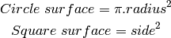
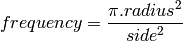
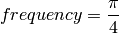

An example of functional programming¶
We are going to compare two styles of computer programming, procedural and functional, for finding an approximation of Pi. The idea of the approximation is interesting because it only requires random numbers and simple knowledge about circles and squares.
The math of the problem¶
Take a square and the circle which fits into the square. A random point of the square can be either in the circle or outside of the circle. Now, the frequency for a random point to be part of the circle can be computed as the ratio between the number of points of the circle and the total number of points. In math, this is summarized as:

The number of points in a shape is another name for the surface of the shape, that is:

Because the square contains all the points, and because the surface of a shape is the set of points contained in the shape, the frequency in 1. becomes:

To make things simple, take a circle with a radius of 1, and its containing square with a side length of 2, the frequency is simply

This means that if you can build an experiment which gives you an approximation of this frequency then an approximation of Pi is four times the frequency.
Let’s picture the square, the circle, and two random points. The square and circle are centered on zero, the radius for the circle is 1 and it fits into the square with a side of 2. A random point is made of two coordinates, one for the horizontal position and one for the vertical position.

This figure makes it clear is that the point is in the circle if
and only if the distance between the point and the center is
smaller than the radius, which means here: smaller than one. The
method to compute the distance to the center has not changed for
thousands years, it is still:  ,
where x represents the horizontal position and y represents the
vertical position.
,
where x represents the horizontal position and y represents the
vertical position.

To sum up the recipe for Pi, take a million random points in the square, count the points in the circle, divide by a million and multiply by four. Serve with a slice of lemon and a small quantity of salt.

A procedural and a functional algorithm¶
That was for the theory, let’s implement the recipe which means let’s make a working example out of the design. Actually, we will make two working examples in the Python programming language and compare the styles.
In either styles, we will use the functions math.sqrt() and random.uniform(): the latter returns the square root of the argument given as an input, the latter returns a random decimal number uniformly distributed between the values of the first and the second arguments. Also, both scripts will take the number of points (the sample size) as the first argument, so we will need sys.argv: it holds the command line parameters of the script
#!/usr/bin/env python
from random import uniform
from math import sqrt
from sys import argv
The procedural algorithm consist of: as many times as there are points in the sample, to take a random point, then to test the inclusion of the point in the circle and when it’s inside, increment a counter by one. When the loop is finished, print the counter divided by the sample size and multiplied by four. Here it is, written in Python:
size = int( argv[1] )
counter = 0
for i in xrange( size ):
if sqrt( uniform(-1,1)**2 + uniform(-1,1)**2 ) < 1:
counter+=1
print( ' Pi ~ %s ' % ( counter * 4.0 / size ))
The equivalent functional algorithm is: make a function which returns a list of random points as big a the requested sample size. Then make another function which tests if the input point is in the circle. Finally, print the length of the list of points filtered by the test function, and as before, divide by the sample size and multiply by four:
size = int( argv[1] )
points = lambda n : [ (uniform(-1,1), uniform(-1,1)) for i in xrange( n ) ]
in_circle = lambda p : sqrt( p[0]**2 + p[1]**2 ) < 1
print( ' Pi ~ %s' % ( len( filter( in_circle, points( size ) ) ) * 4.0 / size ) )
Now if we test it in a command line, it does approximate Pi, but as simple as it is, it converges pretty slowly:
~$ procedural.py 1000
Pi ~ 3.112
~$ procedural.py 100000
Pi ~ 3.14192
~$ functional.py 500000
Pi ~ 3.140128
In your opinion, which style fits the job best? I am not a big fan of the procedural style here, it is a sequence of instruction without much structure. The functional style cleanly analyzes the problem into simpler bits which solve the problems one by one.
Performance and lazyness¶
For the brave and curious, by comparing the behavior of the two solutions with regard to huge samples, we will hit an interesting problem which will allow me to present the differences between the list and the python magic called generator. Let’s execute the script with 200 000, one million and five million points in the sample
~$ alias time='/usr/bin/time --format " duration: %e seconds"'
~$ test_it () { for i in 200000 1000000 5000000; do time $1 $i ; done ; }
~$ test_it ./procedural.py
Pi ~ 3.13974
duration: 0.56 seconds
Pi ~ 3.141572
duration: 2.19 seconds
Pi ~ 3.1412144
duration: 10.97 seconds
~$ test_it functional.py
Pi ~ 3.13992
duration: 0.61 seconds
Pi ~ 3.141356
duration: 3.39 seconds
Pi ~ 3.1416272
duration: 32.71 seconds
Pi ~ 3.1409
~$ # Do not hesitate to send the stop signal if it takes too long
~$ # on your computer: Ctrl-C or Ctrl-Z
Mmmh, the functional version takes longer and it does not scale. The problem stems from the fact that points() and filter() make up lists of several million elements stored in the laptop memory, which is too small to handle them all efficiently. It is no use to store them all, in this problem, we only need one at the same time.
A solution is to use is a generator , it is a kind of Python magic which behaves like a list, but which only generates the element of the list when they are requested by the function which manipulates the generator. They are not stored, it is on demand. This technique is also called lazy evaluation.
The points() function is modified: this expression, which returns a list
[ (uniform(-1,1), uniform(-1,1)) for i in xrange( size ) ]
is substituted by this expression, which returns a generator:
( (uniform(-1,1), uniform(-1,1)) for i in xrange( size ) )
The filter() function is substituted by its generator-returning counterpart ifilter() in the itertools module. One last change: a generator has no length, so len() is substituted by a trick: sum a list of ones for each point in the circle:
from itertools import ifilter
n = int( argv[1] )
points = lambda n : ( (uniform(-1,1), uniform(-1,1)) for i in xrange(n) )
in_circle = lambda p : sqrt( p[0]**2 + p[1]**2 ) < 1
print(" Pi ~ %s" %
( sum( ( 1 for _ in ifilter( in_circle, points( n ) ) ) ) * 4.0 / n ))
The test_it() function shows the that lazy functional implementation operates with a performance boost of 14%, 25% and 55% over the previous functional implementation
~$ test_it ./harder_better_stronger_faster.py
Pi ~ 3.13988
duration: 0.54 seconds
Pi ~ 3.143804
duration: 2.62 seconds
Pi ~ 3.141496
duration: 13.10 seconds
At this point, the two styles are technically rougly equivalent, the functional style needs more care in Python, reads less straightforward, and is 10% slower than the procedural counterpart.